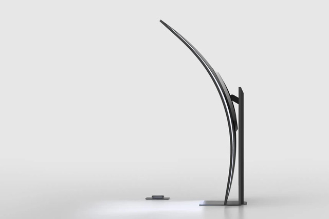
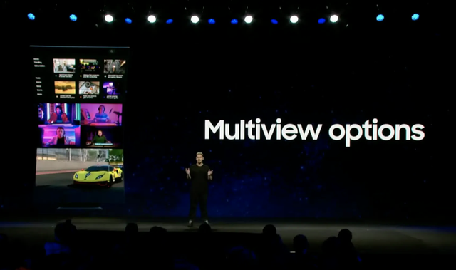
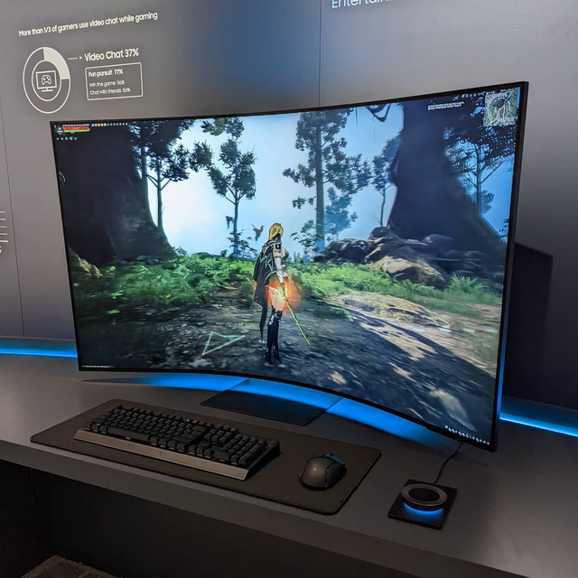

Samsung ra mắt Odyssey Ark, màn hình cong lớn nhất của hãng và có thể dựng đứng lên
Tất cả các thông tin chi tiết, bao gồm cả giá và thời điểm mở bán, sẽ được Samsung thông báo trong thời gian tới
Samsung vừa ra mắt màn hình cong lớn nhất của hãng dành cho PC, sản phẩm này sẽ khiến bạn choáng ngợp khi nhìn thấy. Tại CES 2022, hãng đã giới thiệu màn hình cong 55 inch, tỷ lệ 16:9 và thậm chí còn có chân đế cho phép bạn dựng đứng nó lên để dùng theo chiều dọc, với phần cong lúc này sẽ ở ngay trên đầu bạn.

Màn hình này có tên là Odyssey Ark và Samsung khẳng định đây không phải một sản phẩm mang tính ý tưởng
mà sẽ là sản phẩm thương mại, mở bán tại Mỹ vào nửa cuối năm nay. Tuy nhiên thông tin về giá và ngày
phát hành cụ thể vẫn còn là bí ẩn.
Theo những gì được biết, Odyssey Ark có màn hình Mini LED chấm lượng tử. Thậm chí, vẫn chưa rõ liệu
Samsung sẽ hướng Odyssey Ark đến chơi game, làm việc, hay trở thành một sản phẩm mang tính thời trang.
Đến lúc này mọi thông tin đều khá ít ỏi.
Chân đến HAS (chân đế có thể điều chỉnh độ cao) đi kèm Odyssey Ark có chức năng xoay và nghiêng, khi dựng đứng, màn hình cung cấp trải nghiệm mới lạ khi chơi game và mang đến không gian làm việc đa cửa sổ theo chiều dọc.
Màn hình cũng đi kèm núm điều khiển không dây để chỉnh các thông số như ánh sáng và giao diện.
 Tất cả các thông tin chi tiết, bao gồm cả giá và thời điểm mở bán, sẽ được Samsung thông báo trong thời gian tới.